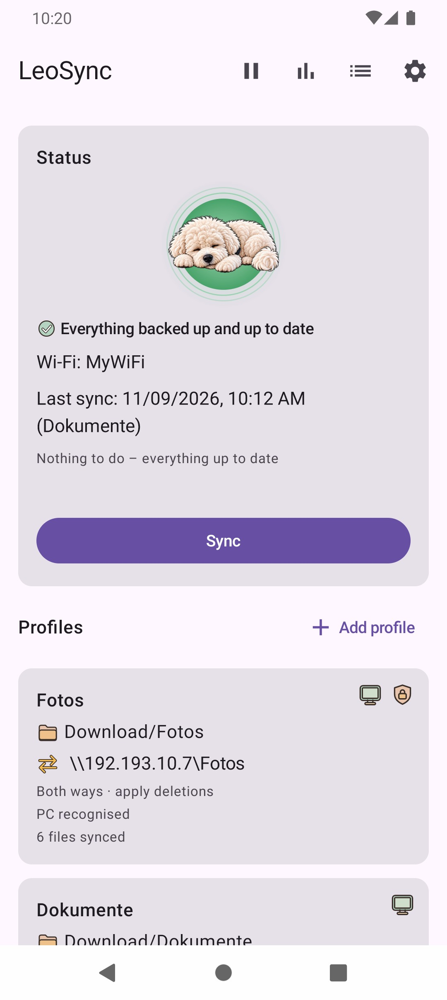

Why back up smartphone photos to a NAS?
Photos and videos fill up a phone faster than you expect, and a lost or broken phone takes the memories with it. A NAS on your home network solves both: your files sit on a device you own, with plenty of space, no subscription and no cloud provider in between. LeoSync transfers them automatically as soon as your phone is on your home Wi-Fi.
How LeoSync backs up your photos
- Directly via SMB: LeoSync speaks SMB2/SMB3, the protocol behind Windows network shares that NAS devices offer as well. There is no relay server.
- Automatic: As soon as the phone is connected to a Wi-Fi network you entered, the backup starts in the background. If the NAS is off, LeoSync checks again every 30 minutes.
- Sorted: Photos end up in folders by year, month and travel country, for example
2026\06 - Egypt. The country is determined offline from the GPS data. - No duplicates: LeoSync compares with the shared folder and never transfers a file twice. Interrupted uploads are resumed.
- Verified: If you wish, LeoSync reads each file back after uploading and compares it with the original before photos are removed from the phone.
Requirements
- Android 10 or newer.
- A NAS (or PC) with an SMB share (SMB2/SMB3) and a user with write permission on the target folder.
- Phone and NAS on the same network. Enter the NAS's IP address (e.g.
\\192.168.1.50\Photos), because Android does not reliably resolve.localnames. - The Windows route is described in detail in the help. On a NAS, you create the share and user in its admin interface. How to encrypt the transfer on Synology, QNAP or Samba is explained in the help.
Which NAS and SMB setups work?
LeoSync is tested with a Windows folder share and with a NAS, and works there without problems. The requirement is an SMB2/SMB3 share with a user name and password, as offered by common NAS systems, for example from Synology or QNAP. Test connection tells you right away whether sign-in and target folder work for you.
There is one quirk on some NAS devices (Samba): the PC ID may not be stable there. If so, set Wi-Fi name only in the profile.
Setup in five steps
- Create a shared folder for the photos on the NAS and give a user write permission.
- Install LeoSync and grant the permissions it asks for.
- Tap Add profile, choose Back up photos & videos, and enter the NAS's IP address, user and password. Choose folder on the PC… lists the shares to pick from.
- Check everything with Test connection.
- Tap Simulate to see what would happen without transferring anything, then tap Sync once by hand. After that, the backup runs automatically.



Safe in everyday use
For folder profiles, deleted or overwritten files go to the @LeoSync-Bin trash. The safety brake stops and asks if many files would be deleted at once. Free up space removes old files from the phone that are verifiably on the NAS. You find all features on the LeoSync home page.
Frequently asked questions
Does LeoSync work with Synology or QNAP?
LeoSync connects to SMB2/SMB3 shares with a user name and password, as Synology and QNAP NAS devices offer them too. The app is tested with a NAS and works there without problems. Test connection shows right away whether it works for you.
Do I need a cloud or an account?
No. Files only travel between your phone and your NAS or PC. LeoSync has no server and needs no account.
Does the backup also run when I am away from home?
By default only on the Wi-Fi you entered. Under Settings Transfer you can allow mobile data or VPN; this can use data and cost money.
What happens if the NAS is switched off?
LeoSync waits and checks again every 30 minutes on Wi-Fi. As soon as the NAS is reachable, new photos are transferred.